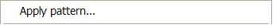

Pattern Application
To apply a pattern somewhere in a model, right-click a diagram or a set of elements and select the “Apply pattern…” menu item.

This starts the Pattern Application wizard.
Wizard page 1: Pattern selection
Wizard page 2: Role mapping
Dialogs for missing containers